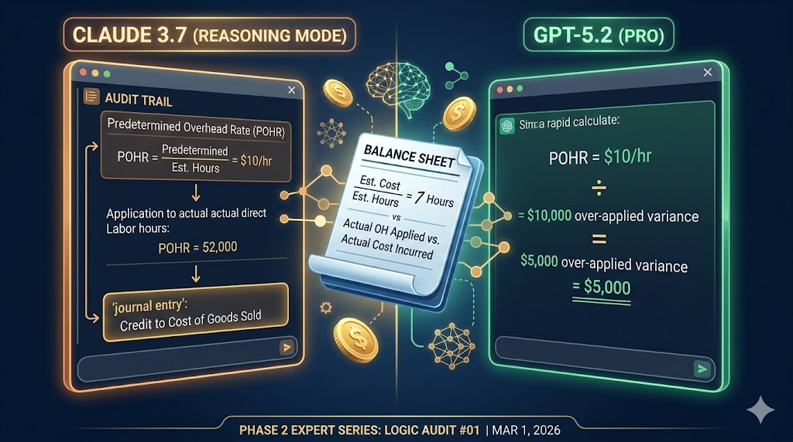

LOGIC AUDIT #01
Claude 3.7 vs. GPT-5.2: The Great Overhead Variance Test
I put the industry's leading reasoning models to the test with a complex Managerial Accounting problem. The results reveal a significant gap in audit-trail transparency.
Read the Logic Audit →